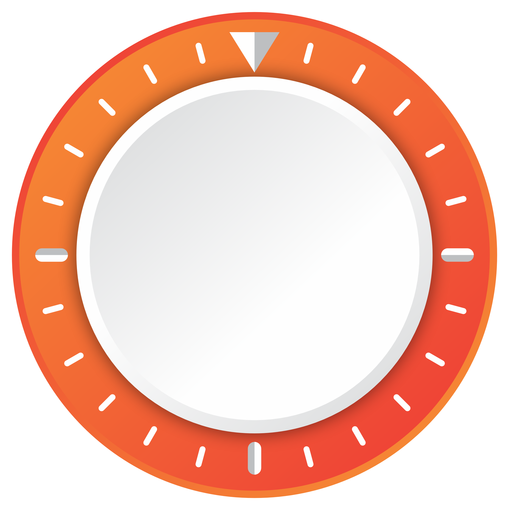
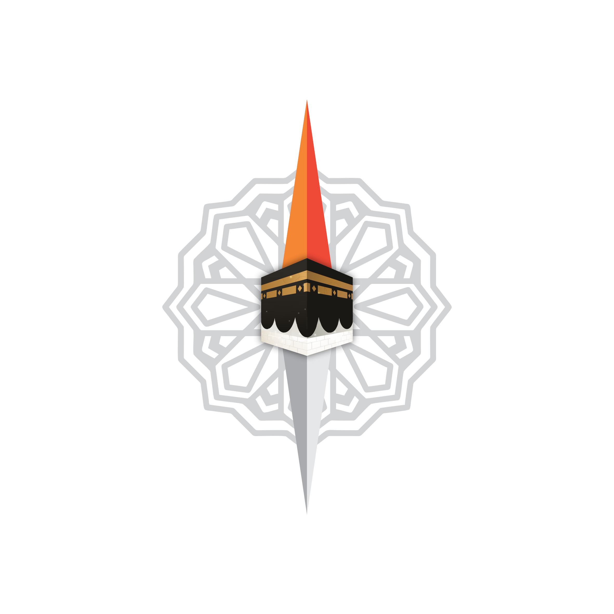

Judul
A-
A+
Juz
-- --- ----
Memuat...
--:--:--
Ketuk untuk Pusat Ibadah ➔
Agenda Terdekat
Jadwal Hari Ini
Arah Kiblat
Pastikan GPS aktif & ketuk tombol di bawah.


Aktifkan Kompas
Tasbih Digital
٠
Ketuk
Reset Nol
Seluruh Agenda IASS Wilayah Surabaya
Pilih Lantunan Syaikh
Batal
Pustaka Maulid
Maulid Simtudduror
Al-Habib Ali bin Muhammad Al-Habsyi
Maulid Ad-Diba'i
Syekh Abdurrahman Ad-Diba'i
Qashidah Al-Burdah
Imam Al-Bushiri
Batal
Wirid
Maulid
Qur'an
Lewati ✕
Lanjut ➔